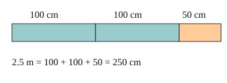

Part of Metric Units. Answer in the chat (1: ..., g: c), add sure or guess after any answer, and say done when finished.
Last time: change 2.5 m into cm. You said b) 250, and it is.

A length does not change when you change its unit, only the count does. A smaller unit fits more times, so going to a smaller unit you multiply by the factor, and going to a bigger unit you divide (notes 2, 3).
Q1. Change 3.2 km into m.
3200 (sure)
Q2. Change 450 mm into cm.
45
Q3. In your own words: why do you multiply when you change m into cm?
a cm is smaller, so more of them fit in the same length, 100 for every metre
A square is 1 m on each side. What is its area in cm²?
a (sure)